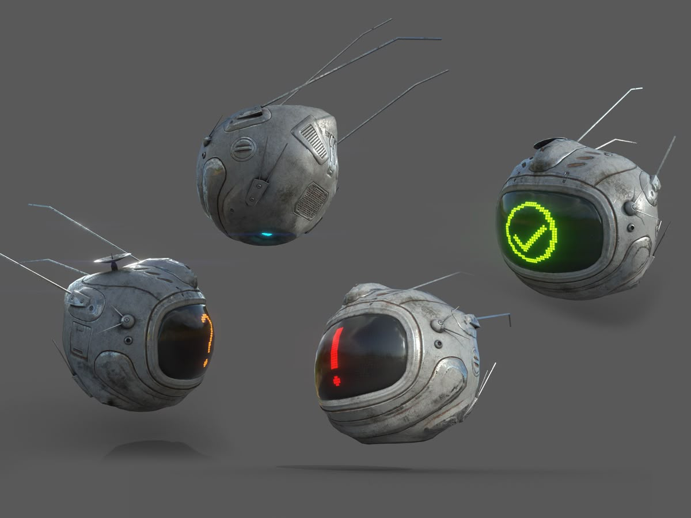

Live Map — 6 units deployed
ORB-04Nominal — sensor active
ORB-07Nominal — sensor active
ORB-11Alert — motion detected

Sensor, surveillance and aerospace systems — the surveillance-tech category done the way it should have been done from the start.
Companies like Palantir, Flock Safety and Axon built the surveillance-and-sensor category and proved the technology works. Seraphim’s idea is the same category, built to a different standard — the same capability, aimed at the same problems, run under rules the others don’t bind themselves to.
The name is literal. A seraph is described with many eyes and many wings — which is the whole company in two words: sensing (the eyes) and aerospace (the wings), under one roof.
Click a product to open it. Seraphim is not only a defense supplier — every line below has a civilian or dual-use version.


The core idea is a vacuum balloon: a rigid, circular cage-net envelope with the air pumped out entirely, so it floats on buoyancy alone rather than a lifting gas. A small propeller and a compact sensor suite ride inside the cage. Filed as a concept patent — the same category as Flock Safety’s fixed cameras, except airborne and mobile.
Vacuum liftSensor suiteConcept patent
Placeholder photo — a sourced sci-fi concept render, not our design. Swapped for real renders once ORB is actually engineered.
Small-format satellite platforms, built for rapid, cheap deployment rather than the traditional large-satellite model. Paired with the space-plane program below for launch.
Mini-satNano-satConcept only
No imagery yet for this line specifically.
A tethered-fiber quadcopter line, with a civilian version sold the way DJI sells its consumer drones — a parallel commercial product line, not just a defense-only configuration.
Tethered fiberCivilian line
No product imagery yet — the sourced reference photos for this line depicted real, currently-manufactured combat hardware and were left out rather than implying that is our design.
An all-in-one logistics planning application — fleet, sensor and mission planning in one piece of software rather than five disconnected tools.
SoftwareAll-in-one
A fleet of high-flying, winged carrier aircraft — not rockets. Each one flies to altitude carrying a rocket on its back, releases it at the desired height, and the rocket continues on to orbit while the carrier plane returns and lands like any other aircraft, ready to fly again.
The pitch: SpaceX’s reusability, reached a different way — a plane instead of a landing booster. The target expertise is specifically high-Earth orbit delivery.
Ornithopter-based — wings, not propellers. Manned or unmanned, quiet enough for policing work where a loud quadcopter would announce itself.
A wing-and-sensor variant of the ORB line, same quiet-flight principle, built for the same low-profile monitoring role.
The space-plane program is deliberately scoped to the higher orbital bands, not a general-purpose launch competitor.
A government-facing application for tracking Seraphim hardware in the field — where every deployed ORB is, its live sensor feed, and detection alerts routed through one dashboard instead of a dozen disconnected tools. Mock-up below, built for this page — not a screenshot of a real product.
Earlier-stage ideas, kept here rather than lost. Nothing in this section is engineered — it is a research direction, not a roadmap.
Aircraft that can operate at the water’s surface as well as in the air — an old idea (a 1934 Soviet design was the first serious attempt) worth revisiting with modern materials.
Multiple ORB units operating as one coordinated group rather than individually piloted units.
This is a fictional concept draft, made for a personal portfolio of company ideas and gated behind a password so it isn’t publicly discoverable. Seraphim is not a real company, has no products, funding, or employees, and has no relationship to any real defense contractor, government agency, or company named on this page for comparison. Several images on this page are sourced placeholders standing in for art that does not exist yet — used here purely to test layout and colour before commissioning original work, and already replaced in one case where the only available reference depicted real, currently manufactured weapons hardware.